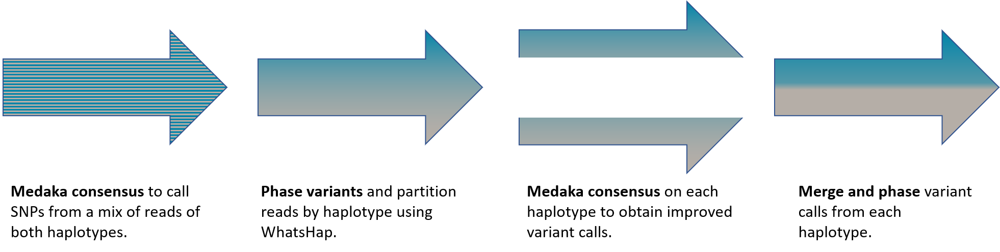

Experimental SNP calling¶
Medaka implements an experimental pipeline to call single nucleotide polymorphisms (SNPs) from Nanopore basecalls, leveraging medaka’s existing consensus network and phasing information from WhatsHap.
The approach is to make a first pass on a pileup of reads to a reference sequence using medaka in the usual manner. Ordinarily medaka will only call a consensus sequence from the outputs of its neural network. However is it possible to pull-out secondary calls from its output, i.e. alternative alleles. A secondary call occuring with a high probability indicates heterozygous locus. Where no secondary call occurs with a high probability the locus is determined to be homozygous.
Applying such a process gives respectable, if not state-of-the-art results for a region (chr21:21300000-22305000) of the NA12878 human sample.
| Precision | Recall | F1 score | |
| nanopolish | 0.9938 | 0.9662 | 0.9798 |
| clairvoyant | 0.9906 | 0.9519 | 0.9709 |
| medaka consensus | 0.9575 | 0.9467 | 0.9521 |
Here both the nanopolish and clairvoyant calls have been post-processed with a custom strand-bias filter to maximise the F1 score. Remarkably despite being trained to call a single consensus, medaka can in fact recover some heterozygous sites. Indeed one of its failings is to call homozygous sites as heterozygous; this is often true of nanopolish also.
To improve on these results, we can attempt to phase the recovered variants using WhatsHap. This process allows us to uncover the haploid genomes and assign a haplotype to all reads. Having partitioned reads into their haplotype we can run medaka consensus a second time to calculate a consensus sequence for each haplotype invididually. This second pass is a task in which we know medaka excels, see Benchmarks. Having run medaka on the partitioned reads it is a simple task to reconstruct variant calls, both homo- and heterozygous, and rephase.
In principle one can iterate this process to further refine the partitioning of reads into their haplotypes. After two iterations we obtain state-of-the-art results for the region under test:
| Precision | Recall | F1 score | |
| medaka variant | 0.9939 | 0.9745 | 0.9841 |
| nanopolish | 0.9938 | 0.9662 | 0.9798 |
| clairvoyant | 0.9906 | 0.9519 | 0.9709 |
| medaka consensus | 0.9575 | 0.9467 | 0.9521 |
The pipeline described above is implemented in the medaka_variant program:
source ${MEDAKA}
medaka_variant -f <REFERENCE.fasta> -b <reads.bam> -m r941_flip213
It has been benchmarked on flip-flop basecaller output only. This will run all the necessary steps, performing two iterations of the process described above finally outputting a final phased .vcf variant file.
Note
The medaka_variant (and medaka_consensus) pipeline only operate on a .bam alignment file containing a single sample (value of the RG alignment tag). It will refuse to run in the case of two read groups being present.
Further Improvements¶
Currently the medaka_variant pipeline reuses existing tools and neural neural networks trained for the task of deriving a consensus sequence. No specialisations have been made for the task at hand. Naturally the existing networks do not expect reads indicating a diploid sample and so their ability to correctly call heterozygous sites is limited, though useful as demonstrated above. It would be preferable to train a neural network with explicit knowledge of zygosity — this can be done fairly straight-forwardly with some minor modifications to medaka’s training code.
The models currently provided within medaka are trained from bacterial samples, and further predominantly from PCR products. To improve variant calling from basecalls of human, native DNA a next step would be to instead use such a sample in training.
With these changes, and others, it is likely that the results presented above can be improved upon.